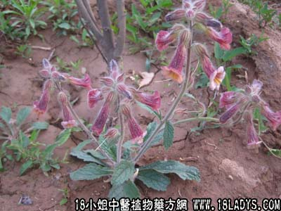

【中药概述】
生地黄为玄参科草本植物地黄的干燥块根。甘、苦，寒。归心、肝、肾经。
1．清热：用于温热病热入营血，身热口渴，能清营凉血，以泄邪热，如清营汤。
2．养阴：用于热病后期，低热不退，或慢性病的阴虚潮热等，如（青蒿鳖甲汤）、（<医林改错>血府逐瘀汤）。
3．凉血：用于血热妄行的出血证及血热发斑等。
4．生津：用于热病伤津、口渴等症，如（益胃汤）、（<温病条辨>增液承气汤）。
5．消渴：对于阴虚不能胜热，而致消渴（口渴思冷饮，饮不解渴，小便频多，易饿等），常配山萸肉，山药，茯苓，丹皮，泽泻，五味子，天花粉等。
【药效鉴别】
生地黄为血分药，能清营凉血以泄邪热，鲜者寒性较强而多液，清热凉血之力优于干地黄，且生津；干地黄亦具以上功效，更长于滋养肝肾之阴。
1．论干地黄泻心火、凉血热之功。王好古：“生地黄，手少阴，又为手太阳之剂，故钱氏泻丙与木通同用以导赤也。诸经之血热，与他药相随，亦能治之，溺血、便血亦治之。(《汤液本草》)
2．论干地黄有补虚宣邪并行之功效。赵其光：“干地黄乃补宣并行，为因虚得实之良药。古方黄芩汤治心劳实热，小甘露饮治脾劳寒热，地黄汤治肾劳实热，麦冬汤治脉实极为病咸用之。夫既曰虚劳而又曰实者高也？《经》曰：精气夺则虚，邪气盛则实。因精虚以致赤实而益致精虚，故宜此宣邪以补虚，而后乃用纯补，方有次序。(《本草求原》)
3．论干地黄除寒热积聚痹着之机制。张山雷：“（地黄）作汤以除寒热积聚，除痹，则言其入煎剂尤为流动活泼，所以积聚痹着皆除。此以补养为磨积之计，乃正气旺而病自退，非谓地黄滋补之药，竟能消积通痹也。盖气血不充，津液不布，则仍似此坚顽固结之病，必无可愈之理，所以积聚癥瘕痞积等证，均宜且补且行，斟酌进退，缓以图之，自可徐收效果。若仅读张子和书，止知攻破为长，不顾正气，日事峻削，甚至愈攻愈坚，纠结不解，以速其危者，其亦有昧于此而少知自反乎。”(《本草正义》)
4．论干地黄治经脉筋络之病，功在荣养而不在通利。邹澍：“地黄之用在其脂液，能荣养筋骸血络，干者枯者，能使之润泽矣。进乎此，则因干枯而断者，得润泽而仍能续。故地黄之用不在通而在能养，盖经脉筋络干则收引，润则弛长，是养之所以续之。《本经》疗跌折绝筋，仲景治脉结代，胥是意也。”(《本经疏证》)
5．论干地黄晒干与火干的药性差异及干、鲜与熟地黄的功用差异①陈藏器：“《本草》云干地黄，《本经》不言生干及蒸干，方家所用二物别，蒸干即温补，生干则平宣，当依此用之。”(《本草拾遗》)②张洁古：“地黄生则大寒而凉血，血热者须用之。熟则微温而补肾，血衰者须用之。又脐下痛属肾经，非熟地黄不能除，乃通肾之药也。（引自《纲目》）③李时珍：“《本经》所谓干地黄者，乃阴干、日干、火干者，故又云生者尤良。《别录》复云生地黄者，乃新掘鲜者，故其性大寒。其熟地黄，乃后人复蒸晒者，诸家《本草》皆指干地黄为熟地黄，虽主治证同，而凉血补血之功稍异。”(《纲目》)
【临证应用】
治疗关节炎。用地黄煎剂治疗风湿性或风湿性关节炎，关节疼痛减轻，肿胀消退，肢体活动障碍好转，血沉也有一定恢复。
【药理作用】
1. 降血糖：怀庆地黄的有效部分（R-BP-F）腹腔注射，对四氧嘧啶所致小鼠实验性糖尿病有降低血糖作用。
2. 止血：生地、熟地煎剂、生地炭、熟地炭灌胃，对小鼠均可缩短血液凝固时间（毛细管法）。
3. 抗弥漫性血管内凝血：地黄70％甲醇提取物抑制ADP引起的大鼠血小板聚集，并有抗凝血酶作用，对内毒素引起的大鼠弥漫性血管内凝血有对抗作用。另外尚有抗炎免疫、抗肝损害等作用。
【化学成分】
含甘露醇 及少量豆甾醇、微量的菜油甾醇，另含地黄碱、维生素A类物质、多种糖类及多种氨基酸。
【用量用法】 10——15g，水煎服，或入丸散剂。
【使用注意】 凡脾虚有湿、腹满便溏者忌。
【注】地黄属四大怀药之一（山药、地黄、牛膝、菊花）。因其主产于河南新乡（过去称“怀庆府”）等县故名。